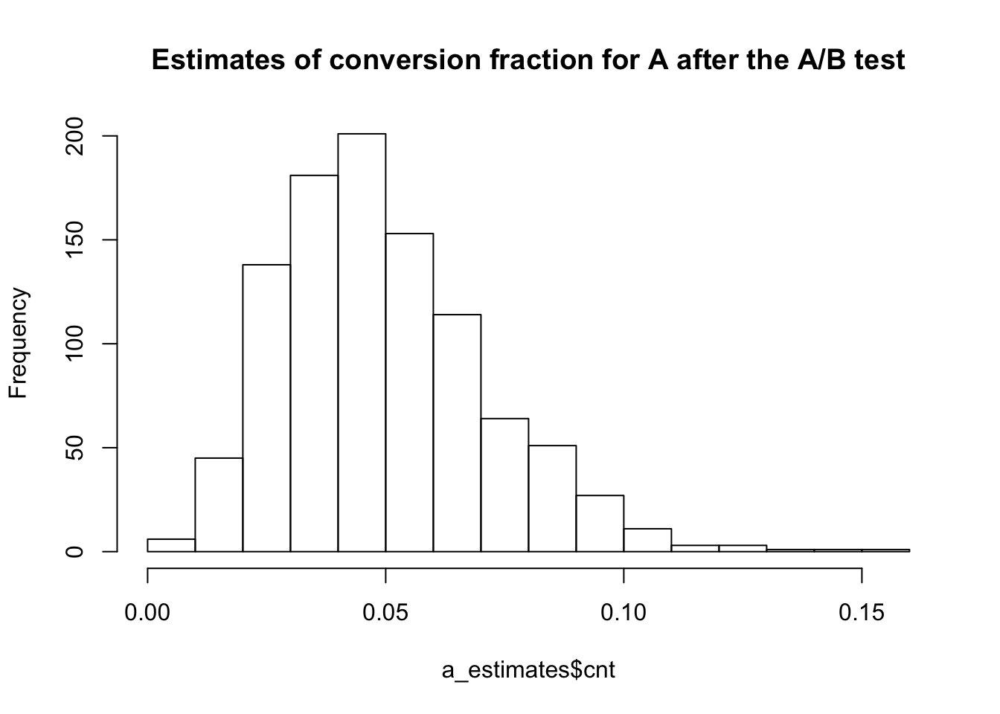

Using Bayesian Systems
- Quantify the probability of all possibilites thus measuring risk
- insert institutional knowledge (add knowledge that changes the probability)
- learn in an online fashion
A/B Testing with Approximate Bayesian Computation
- No mathematics required
- able to implement from scratch
A/B Testing
Measures and figures out the better design
Approximate Bayesian Computation
- Generate a trial value for the thing we want to know (in this case its the conversion fraction of a layout)
- Simulate or data assuming the trail value, keep the trial value, otherwise discard it and try again
- If the simulation looks like the real data, keep the trial value, otherwise discard and try again
- Keep doing this until we’ve got lots of trial values that worked
library(progress)
library(ggplot2)
library(reshape2)## Warning: package 'reshape2' was built under R version 3.6.2# Variables
n_visitors_a <- 100 # number of visitors shown layout A
n_conv_a <- 4 # number of vistors shown layout A who converted (4%)
n_visitors_b <- 40
n_conv_b <- 2Using Bayesian Systems
- Quantify the probability of all possibilites thus measuring risk
- insert institutional knowledge (add knowledge that changes the probability)
- learn in an online fashion
A/B Testing with Approximate Bayesian Computation
- No mathematics required
- able to implement from scratch
A/B Testing
Measures and figures out the better design
Approximate Bayesian Computation
- Generate a trial value for the thing we want to know (in this case its the conversion fraction of a layout)
- Simulate or data assuming the trail value, keep the trial value, otherwise discard it and try again
- If the simulation looks like the real data, keep the trial value, otherwise discard and try again
- Keep doing this until we’ve got lots of trial values that worked
estimate_conversion <- function(n_visitors, n_conv, trial_conversion, n_estimates = 1000)
{
i <- 0
pb <- progress_bar$new(total = n_estimates)
estimates <- c()
while (i < n_estimates) {
p <- trial_conversion()
n_sim <- simulate_conversion(p, n_visitors)
if (n_conv == n_sim)
{
estimates <- c(estimates, p)
pb$tick()
i <- i+1
}
}
data.frame(cnt = estimates)
}trial_conversion_a <- function()
{
runif(1,0,1)
}simulate_conversion <- function(p, n_visitors)
{
nsum <- 0
for(i in 1:n_visitors)
{
nsum <- nsum + if (runif(1,0,1) < p){1} else {0}
}
nsum
}a_estimates <- estimate_conversion(n_visitors_a, n_conv_a, trial_conversion_a)hist(x=a_estimates$cnt, main = 'Estimates of conversion fraction for A after the A/B test')
trial_conversion_b <- function() {
while(TRUE == TRUE)
{
x <- rnorm(n = 1, mean = 0.06, sd = 0.02)
if(0 <= x && x <= 1) return(x)
}
}
trial_as_func <- function() {
a <- c()
for(i in 1:10000)
{
a <- rbind(a, trial_conversion_a())
}
a
}
trial_bs_func <- function() {
a <- c()
for(i in 1:10000)
{
a <- rbind(a, trial_conversion_b())
}
a
}trial_as <- data.frame(cnt = trial_as_func())
trial_bs <- data.frame(cnt = trial_bs_func())
trial_as$trial <- 'a'
trial_bs$trial <- 'b'
trailCnt <- rbind(trial_as, trial_bs)
ggplot(trailCnt, aes(cnt, fill=trial)) +
geom_histogram(alpha = 0.5, bins =50)+
labs(title = "Beliefs about conversion fraction prior to A/B test")
b_estimates <- estimate_conversion(n_visitors_b, n_conv_b, trial_conversion_b)
a_estimates$trial <- 'a'
b_estimates$trial <- 'b'
trailCnt <- rbind(a_estimates, b_estimates)
ggplot(trailCnt, aes(cnt, fill=trial)) +
geom_histogram(alpha = 0.5, bins =50)+
labs(title = "Beliefs about conversion fraction prior to A/B test")
a <- a_estimates$cnt > b_estimates$cnt
sum(a == TRUE)/length(a)## [1] 0.331